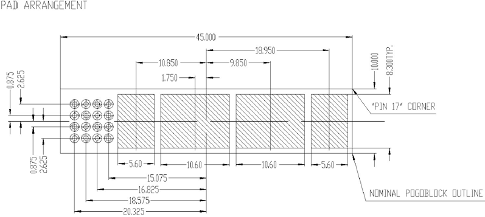
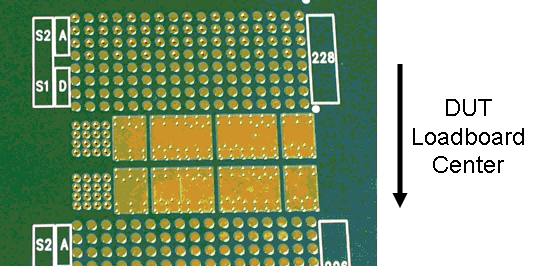
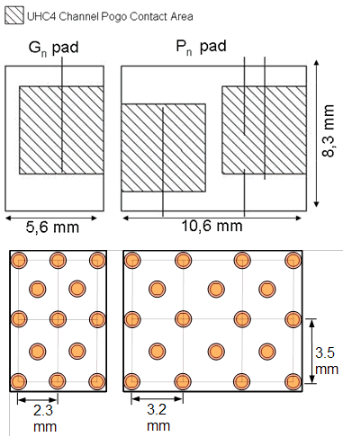

UHC4 / UHC4T DUT board layout
DUT board layout
On the DUT board you must use an appropriate layout for the mating pads to the UHC4 / UHC4T pogo pins. The figure below shows the mechanical dimensions of the plated pads.

For the recommended size of signal pogo pads, refer to Minimum pad size and Signal pogo via drill size in Pogo pad and via design.
The spring contact area requires a surface flatness of Rz 8.0 um or better.
The figure below shows the bottom layer of a DUT board pogo area with a UHC4 / UHC4T pogo pad.

Via design
Several vias are required to connect the plated pads to the inner power layers. The figure below shows a diagram of the via distribution in relation to the pad geometry for a single UHC4 / UHC4T power/ground pad.

The following design rules must be followed:
- Via drill diameter: 0.7 mm +/-
- Cu wall thickness: 25 µm
- 40 A per pad requires the via configuration as shown in the graphic above (High current section pogo via distribution)
- For ganged configuration, connect to at least 4 inner layers
- Surface flatness: Rz < 8 µm. Standard PCB processes should use un-filled vias; filled vias must be discussed with the DUT board manufacturer to confirm that the flatness specification is within manufacturing tolerances.
Functional changes
- Introduced in SmarTest 6.5.0
- SmarTest 7.3.2: Support of UHC4T